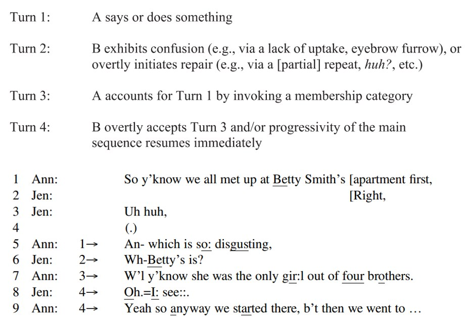
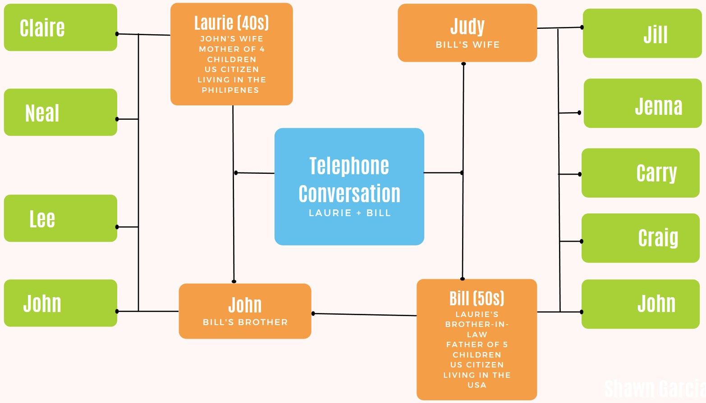
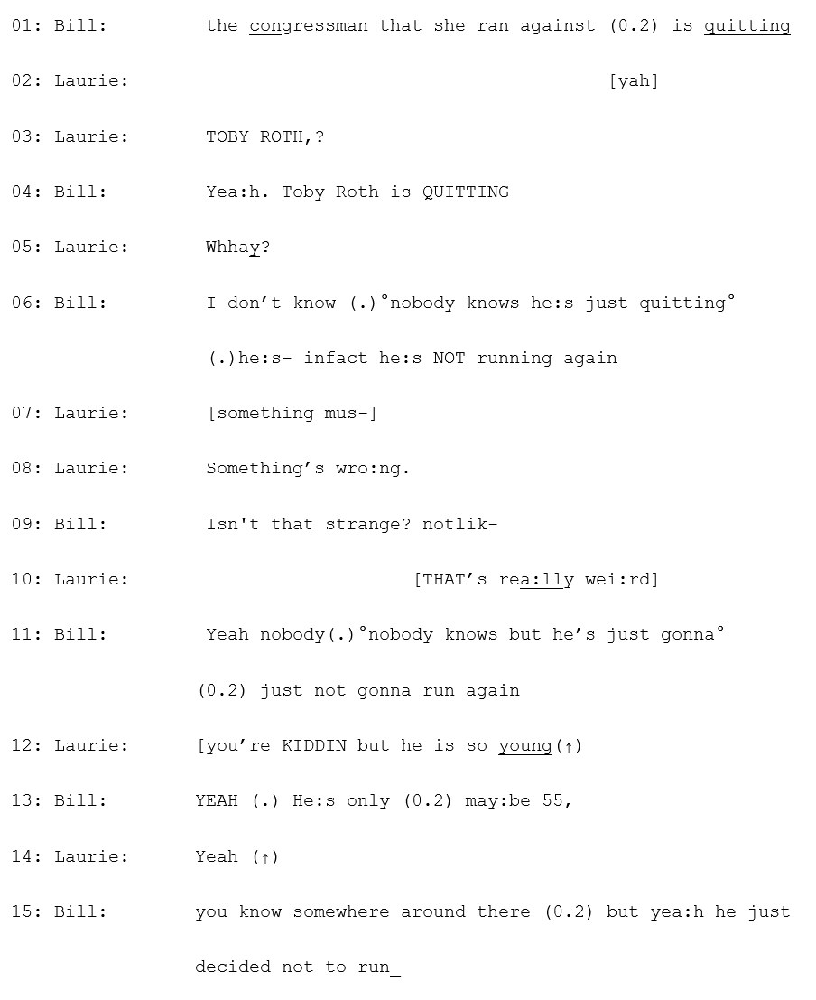
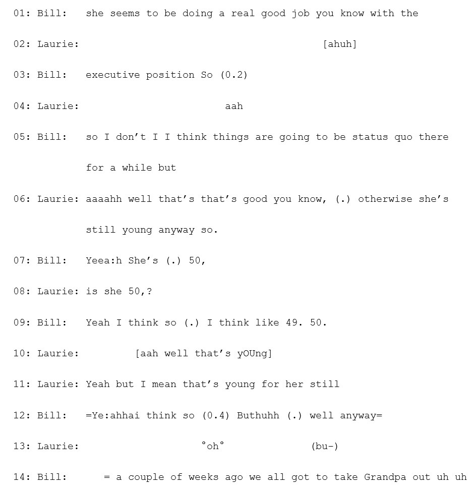

Abstract
A conversation-analytic study of a telephone conversation between two family members, showing how speakers draw on broader societal categories - gender, age, work and home - to construct, negotiate and reinforce norms of masculinity and femininity in ordinary talk.
View the Presentation Slides Watch Video
Social interaction is an element of human existence, as every word, gesture, and expression conveys meaning. However, what people say or how or why something is said the way it is said, is constructed. These constructions in interaction are valuable to research, as indexicality allows people to become aware of how cultural backgrounds become visible in communication (Robles, 2013). This is especially significant in our increasingly interconnected and diverse society, where effective intercultural interaction is essential for establishing relationships, working collaboratively, and promoting mutual understanding. Nonetheless, understanding how this works is highly complex because social action has layers, and each layer has a different pattern, which gives insight into how language shapes social action (Rossi, 2018).
Some of these patterns are universal (e.g., turn-taking, adjacency pairs, repair) in terms of sequence organisation as actions come in pairs (Kendrick et al., 2020). Examples of actions include, asking questions, making requests, or offers, also known as the first-pair part (FFP). However, how people respond to these actions, known as the second-pair part (SSP), depends on the duality of people’s responses because it depends on how the FFP is interpreted. Interpretation is an important factor in social action as conversations can cause some kind of misunderstanding, and these are made detectable through repair. People manage misunderstandings in different ways, it can be something that interrupts the conversation briefly with minimal repair initiation (i.e., unproblematic), or they can be pursued to navigate interaction and prevent disagreement and establish intersubjectivity (Robles, 2017).
All these different layers turn language into scientific patterns with a specific formula. Research in conversation analysis offers valuable insights into how people from different linguistic backgrounds express themselves, interpret meanings, and navigate misunderstandings and conflicts, which is essential in gaining an understanding of our multicultural society.
Identity is constructed by the way people see themselves (i.e., the self) and the way people are perceived by others (i.e., the other) because someone cannot exist in isolation but rather in relationship with others who play a role in affirming their existence (Benwell & Stokoe, 2006). Due to this social factor of identity, it is constantly constructed, created, imposed, expressed, negotiated, resisted, and shaped through ongoing conversations in everyday life. For example, identity can become visible through someone’s ethnicity, age, gender, or occupation.
This concept becomes more visible in membership categorisation analysis (MCA) because it shows how people categorise themselves and others in conversations and how this is constructed by members of society (i.e., social order) (Hester & Eglin, 1997). The assignment of individuals into specific categories provides a framework for understanding and making sense of the social world, as these carry expectations, norms, and roles associated with each category between societies and cultures (Schegloff, 2007). However, the significance of what, why, and how people relate to certain categories becomes obvious when individuals demonstrate those categories or that of others explicitly with actions in conversation. For example, request design in conversation analysis can show how someone’s age can become apparent in the way conversations are tailored to suit the respondent for effective communication (Flinkfeldt et al., 2022).
Schnurr et al. (2020) demonstrate that gendered expectations around work and home life are often reinforced and constructed through conversations and that there are differences in how men and women are expected to balance work and family responsibilities.
These power relations between men and women originate from societal norms where men are expected to have a career and women are subjected to part-time jobs or being housewives. Despite the surface-level changes in gender relations, the gender order remains due to societal expectations (Schnurr et al., 2020). The study by Schnurr et al. (2020), found that women, who moved to Hong Kong to support their husband’s careers, were normalising and maintaining gender order and category-bound activities related to what is expected of men and women according to societal norms in an unproblematic way by accepting those norms, rather than questioning them.
These accepted identities continue to contribute to gender inequalities and allow people to cast others in associated categories as they are socially constructed. Therefore, these actions are not considered as accountable acts (Raymond, 2019), and do not become the object of repair in conversations (Stokoe, 2012).

The study by Raymond (2019) shows that category accounts have a role in constructing and negotiating identity and normativity and investigating situations where people deviate from what is considered as normal by the members of society. This is to maintain social order and to make sense of and manage social action, which becomes evident when social norms related to gender are collaboratively co-constructed in everyday conversations.
The research shows a specific pattern (see figure 1) in which one person utters an action which is seen as a deviation from the normative activities. In lines 1 and 5, Ann is describing Betty’s apartment as disgusting; this deviates from social expectations, which in turn causes confusion as portrayed in line 6 by Jen, indicating a lack of understanding. This usage allows Ann to invoke the membership category and give an account that Betty’s other siblings were all male. Insinuating the expectations of gender norms of hygiene revolved around gender (Raymond, 2019). This is then accepted to reinforce social norms and is rarely challenged by the other person as Jen uses a change of state token to close the repair sequence (line 8) which allows Ann to resume the main conversation in line 9. This shows a mutual understanding of the social order and that it becomes unnecessary to challenge the account given (Raymond, 2019; Robles, 2017).
This analysis shows ways in which gender and age categorisation are intertwined in everyday conversations, and how people use language to negotiate and reinforce social norms and identities in social interaction. The aim of this analysis is to reveal how people in the conversation draw upon broader societal categories to construct and reinforce gender norms, regarding assumptions about gendered work roles, age, and expectations.
The data has been gathered from the TalkBank corpus. The telephone conversation takes place between Bill and Laurie, both from Wisconsin, USA. However, Laurie currently lives in the Philippines with her partner John and their children. She mentions how to get to their island, watching television programs, and reading the newspaper in the Philippines. Bill is Laurie’s brother-in-law and is calling to catch up with his brother, John, who is unavailable as he is at church for the day. During this 30-minute phone conversation, Laurie and Bill discuss various aspects of their lives, with a particular focus on their children.

Laurie and John have four children: Lee, Claire, Neal, and John. Bill and Judy have five children: Jill, Jenna, Carrie, Craig, and John (see figure 2). Based on the information provided, Bill appears to be in his 50s, considering that his son Craig has completed college and is currently seeking employment. Laurie, on the other hand, seems to be in her late 30s or early 40s, given that her children are younger. This assumption is supported by Laurie’s involvement in taking her children to tennis and swimming lessons, as well as one of her children displaying confident reading skills.
The extracts selected to analyse are parts in the conversation where Laurie and Bill talk about politics. The politicians mentioned are associated with Wisconsin, USA, which shows that the conversation took place in the 1990s.
In the conversation, Bill mentions his son Craig assisting Nancy Nussbaum, a politician in the Wisconsin State Senate. They also discuss Toby Roth, a Republican US Representative from Wisconsin, who has chosen not to run for re-election and will be leaving Congress.

In line 1, Bill informs Laurie by giving an account about the congressman, who Nancy Nussbaum ran against, deciding to quit. During Bill’s intra-turn Laurie (line 2) responds with a brief acknowledgment token for him to continue. When Bill finishes line 1, Laurie mentions the name TOBY ROTH?, which means that the information about him was unknown to Laurie. This makes line 3 a request implicative and a go-ahead for line 1, which makes line 1 an informing-implicative (Rossi, 2018). The raised voice in line 3 serves as an account request, and repair initiation, seeking clarification about the situation (Dingemanse & Floyd, 2014; Flinkfeldt et al., 2022).
However, Bill does not provide an account; he simply confirms with the confirmation-token yeah that indeed Toby is quitting, which does not explain why. This makes Laurie pursue with an on-record version of requesting an account (line 5), wanting an explanation from Bill to understand why Toby is quitting (Raymond, 2019). Bill acknowledges Laurie’s account request by explaining that he and nobody else knows the exact reasons behind Toby Roth’s decision (line 6). Although Bill’s response does not offer specific reasons, it provides an account of the lack of knowledge regarding the decision and mentions the category-bound activity linked to gender (Schnurr et al., 2020).
Laurie (line 7) overlaps and then rephrases in line 8 with a categorical inference that something must have happened in order for Toby Roth to have quit his job, as it goes against what is expected in terms of age and work when it comes to societal expectations (Flinkfeldt et al., 2022; Schnurr et al., 2020). Bill accepts Laurie’s assessment (line 9) by initiating a question about the strangeness of the situation and suggesting that Toby Roth’s decision is not aligned with societal expectations and implies a perception of deviation from the category-bound activity/issue of age (Flinkfeldt et al., 2022).
Laurie agrees and pursues the category-bound issue of age wanting an account with the age category (line 10). In line 11, Bill responds to Laurie’s account request by reiterating that nobody knows the reasons and provides an attribute by stating that Toby Roth is simply not going to run for re-election, invoking the category-bound activity. However, the statement implies a resistance to fit Toby Roth’s actions into an explicit category. Additionally, lowering his voice in lines 6 and 11, that nobody knows why, displays unfamiliarity with the topic (Flinkfeldt et al., 2022).
Laurie overlaps and responds to Bill’s account expressing confusion by offering an account of her perception that Toby Roth’s decision is unexpected because he is so young, an explicit mention of the age category and implicit gender order mention (Raymond, 2019; Schnurr et al., 2020). Bill agrees with Laurie’s comment and gives additional information about Toby Roth’s age, stating that he is only maybe 55 years old, emphasising the category-bound issue of age as a factor influencing their perception. Laurie accepts Bill’s account indicating alignment between their perceptions. Bill elaborates on his previous account showing the progressivity of the main sequence, and then he resumes with the main sequence (Raymond, 2019).
Before reaching extract 2, Laurie and Bill continue their conversation and Laurie speculates about Toby Roth’s reasons for withdrawing from Congress, suggesting the possibility of illness as a potential factor. However, Bill believes that Toby’s decision is motivated by a desire to spend more time with his family. The conversation then shifts back to Nancy Nussbaum, and Bill mentions that she will not be running for a position either. He explains that Nancy has recently taken on a new role, and quitting that position would look bad on her, especially considering that she criticised someone else for making a similar decision.

In line 1, Bill is informing/telling Laurie about Nancy doing a good job in her executive position, category-bound activity of work. During his turn, Laurie gives a brief acknowledgment for him to continue, and during his intra-turn silence (line 3), she uses a token of realisation to show understanding of why Nancy will not be running for the re-election (Rossi, 2018).
Bill continues (line 5) informing Laurie about how things will remain the same for a while. Laurie accepts Bill’s turn and gives an account (line 6) of her perception that she is still young anyway, invoking the category-bound activity of work and explicit mention of age, implying Nancy can run for elections in the future (Raymond, 2019; Schnurr et al., 2020). Bill gives an account with the explicit category-bound issue of age (Flinkfeldt et al., 2022), that Nancy is 50 (line 7), insinuating that she is old to run in the future.
To which Laurie responds with an other-initiated repair is she 50?. The use of prosodically marked repair initiation with elements repeated from the prior turn marks disbelief, which causes Bill to provide confirmation in line 9 and repeats the category account (Dingemanse & Enfield, 2015; Raymond, 2019).
In this case, Laurie was under the impression that Nancy was younger, which is why she responds with such disbelief. During Bill’s confirmation of the category account, Laurie overlaps Bill’s turn (line 9) and continues in line 10, by restating (line 9) that it is young for her still, resisting or legitimising the normative association by explicitly mentioning the age category and implicit gender order mention (Raymond, 2019; Schnurr et al., 2020).
In line 12, Bill accepts the turn with yeah I think so, not challenging or resisting explicitly. Laurie accepts Bill’s turn (line 13), by using the change-of-state token oh and closing the repair space providing a resumption for Bill’s telling in line 14 (Raymond, 2019).
Bill resumes immediately and starts a new sequence about taking grandpa out a couple of weeks ago (Raymond, 2019). Here they are both showing their understanding of the social order of 50 being old for a female but nobody communicates it explicitly, because it is a sensitive topic. The concept of women being young at a certain age is considered less than normative, while for a man like Toby Roth it is considered normal to be young at 55, as mentioned in extract 1 (Schnurr et al., 2020).
The aim of this analysis is to show how people, in this case Laurie and Bill, draw upon broader societal categories to construct and reinforce gender norms. They construct their assumptions based on societal expectations of gendered work roles and age in an everyday telephone conversation. The analysis shows that in extract 1, both Bill and Laurie agree and orient towards one another when they talk about Toby Roth quitting his job. They both follow the pattern in the research by Raymond (2019). They invoke the category of age, suggesting 55 is young to quit his job, as it deviates from accepted social expectations. It becomes natural for the participants to resume the main sequence and attempt to justify that deviation.
However, extract 2 is not as straightforward. Even though they follow a similar pattern when talking about Nancy Nussbaum’s age, where category and identity overlap which makes it hard to separate age and gender. In other words, 55 for a man is considered young whereas 50 for a woman is old. Laurie shows resistance through explicit actions of normalising that 50 is young for Nancy. She then gives a change of state token for Bill to continue, reinforcing social norms. However, Bill and Laurie do not follow the main sequence, instead, they start a new sequence, avoiding the topic.
This paper has shown that societal expectations about gender and age remain unchallenged in everyday conversation. They are not viewed as accountable acts as these categories are accepted by society in social interaction.
Benwell, B., & Stokoe, E. (2006). Discourse and Identity. Edinburgh University Press. https://doi.org/10.1515/9780748626533
Dingemanse, M., & Enfield, N. J. (2015). Other-initiated repair across languages: towards a typology of conversational structures. Open Linguistics, 1(1), 96–118. https://doi.org/10.2478/opli-2014-0007
Dingemanse, M., & Floyd, S. (2014). Conversation across cultures. In N. Enfield, P. Kockelman, & J. Sidnell (Eds.), The Cambridge Handbook of Linguistic Anthropology (Cambridge Handbooks in Language and Linguistics, pp. 447-480). Cambridge: Cambridge University Press. doi:10.1017/CBO9781139342872.021
Flinkfeldt, M., Parslow, S., & Stokoe, E. (2022). How categorization impacts the design of requests: Asking for email addresses in call-centre interactions. Language in Society, 51(4), 693-716. doi:10.1017/S0047404521000592
Hester, S., & Eglin, P. (1997). Culture in action: Studies in membership categorization analysis. University Press of America.
Kendrick, K. H. et al. (2020). Sequence organization: A universal infrastructure for social action. Journal of Pragmatics, 168, 119-138. https://www.sciencedirect.com/science/article/pii/S0378216620301454
Raymond, C. (2019). Category accounts: Identity and normativity in sequences of action. Language in Society, 48(4), 585-606. doi:10.1017/S0047404519000368
Robles, J. S. (2013). Culture in interaction. In Kurylo, A. (Ed.), Inter/cultural communication: Representation and construction of culture, pp. 89-114. SAGE. https://in.sagepub.com/sites/default/files/upm-assets/48647_book_item_48647.pdf
Robles, J. S. (2017). Misunderstanding as a resource in interaction. Pragmatics, 27(1), 57–86. https://doi.org/10.1075/prag.27.1.03rob
Rossi, G. (2018). Composite Social Actions: The Case of Factual Declaratives in Everyday Interaction. Research on Language and Social Interaction, 51(4), 379–397. https://doi.org/10.1080/08351813.2018.1524562
Schegloff, E. A. (2007). Sequence organization in interaction: A primer in conversation analysis I. https://doi.org/10.1017/CBO9780511791208
Schnurr, S., Zayts, O., Schroeder, A., & Le Coyte-Hopkins, C. (2020). 'It's not acceptable for the husband to stay at home': Taking a discourse analytical approach to capture the gendering of work. Gender, Work, and Organization, 27(3), 414–434. https://doi.org/10.1111/gwao.12408
Stokoe, E. (2012). 'You know how men are': Description, accountability and categorization. Gender and Language, 6(1), 233-255. https://doi.org/10.1558/genl.v6i1.233